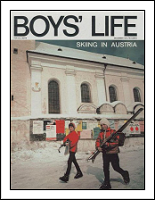
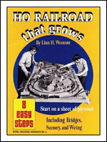
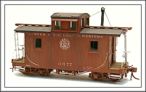
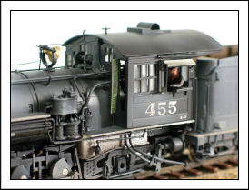

WELCOME TO THE DARK SIDE!
I've been involved in Model Railroading on and off since I was eleven years of age. Like many boys at the time, I was involved in the Scouting program. The Scouts had a magazine called Boy's Life Magazine. I looked forward to the arrival of each issue. The trap was set when the December 1971 issue introduced readers to the hobby of Model Railroading. Inside the pages of that wonderful issue, I found an article that explained how one could build, and enjoy, their own HO model train layout. I was hooked! I just couldn't stop imagining myself as the proud owner of a layout like the one in the pages of Boy's Life Magazine.
I never actually built that layout in the magazine. I found another plan in a book from Kalmbach Publishing called An HO Railroad That Grows. This small 4 x 8 foot layout was built - and did it ever grow! The layout was 23 x 4 feet before I knew it. As happens to most model railroaders, I was distracted for several years by cars, girls, and college and girls. My first layout gathered dust for many years before being dismantled and sold for pennies on the dollar.


I spent most of the 80's and 90's modeling in HO scale narrow gauge. I never found time to build a layout. I did complete some of my best structure builds in HO scale. Still, there was trouble in paradise - I found the small HOn3 locomotives of the time frustrating. With out exception every locomotive I owned had terrible operating characteristics. This was pre-DCC days for me as well. DCC was another wonderful development but I digress.
The hope of finding an HOn3 locomotive that would run reliably led me to purchase a Division Point K-27. These things were amazing (and expensive) but I was impressed! This was what a locomotive should be. They also cost $1200. Little did I know that Blackstone would later rock the HOn3 world with their awesome and affordable locomotives. Sorta wish I had seen that one coming!
So a little more time past and nothing much happened in my HOn3 world. In late 2000 I was approached by Doug Jolley to help out with a little train convention he was putting on in SLC. Seems Doug and a couple of friends had signed on to host the 2001 National Narrow Gauge Convention. During the time we were working on the convention Doug suggested I try Sn3. To seal the deal Doug gave me one of the wonderful short caboose kits produced by PBL. I gladly took the caboose home with me but unfortunately, the caboose found a spot on the same shelf that held all of my other "someday" projects. A couple more years went by with little time for model railroading.

Things finally started to change for the better in 2003. That year I attended the 2003 NNGC in Denver. I decided to take a closer look at Sn3 and PBL when I learned that they used the same plans, and builder as The Division Point. While at the Convention I purchased my first Sn3 locomotive. This was a 2003 run PBL RGS 455 BTW. That was the beginning of my move to the Dark side! I came straight home, and auctioned off all of my HO equipment on Ebay. I was lucky enough to turn a nice profit as well. Don't let the fact that you might take a loss on your old stock keep you from changing scales.

My primary purpose in publishing this website is to pay it forward. Most of us aren't born with any talent. Most of what we know is passed onto us from those that go before us. This website is payment to those many friends and strangers that have shared with me.